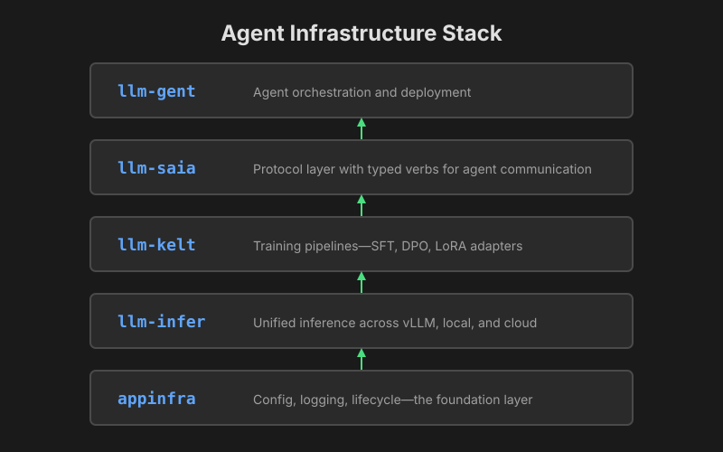
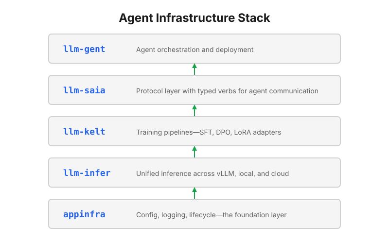

March 19, 2026
Why I'm Building Agent Infrastructure
Every domain I've worked in has reinforced the same lesson: systems that serve a business require sound infrastructure as a foundation. I've seen this across eighteen years of professional work—research, HFT, blockchain—and I see it again now in AI.
The Problem
Today's agent frameworks—LangChain, CrewAI, AutoGPT—have real traction. Millions of users, active communities, production deployments. The dominant architecture is orchestration layers on top of frontier models, relying on prompts and RAG to shape behavior. When agents fail, teams tweak the prompt. When they hallucinate, they add guardrails. When outputs drift (new edge cases, changed user behavior), they hope the next model version fixes it.
The fundamental problem is that agents don't learn from experience.
An agent that fails a task today will fail the same way tomorrow. The knowledge of what went wrong lives in logs that nobody reads, or in the heads of engineers who eventually leave. There's no feedback loop.
The Thesis
The AI ecosystem has mature components:
- Inference: vLLM, TGI, Ollama, cloud APIs
- Training: Unsloth, Axolotl, torchtune
- Agents: LangChain, CrewAI, AutoGPT
Integrating them into a learning loop is the next challenge. An agent deployed on Monday fails on Tuesday; Wednesday brings manual prompt tweaks. The loop from failure to improvement is manual, slow, and doesn't scale.
The missing piece is the connection between deployment, observation, training, and redeployment into an automated cycle.
Integration enables fine-tuning at scale. A fine-tuned 3B model can beat a frontier model on constrained tasks—but only if you have the infrastructure to collect examples, train adapters, and redeploy. Without integration, you can fine-tune once; with it, you can fine-tune continuously as your agent encounters new patterns.
What We're Building
llm-works is infrastructure for agents that learn:


The pieces connect into a loop:
- Deploy an agent with a base model
- Observe its interactions—successes, failures, edge cases
- Train an adapter on the collected data
- Redeploy with the improved model
- Repeat
The goal isn't to replace frontier models. It's to let agents ship with task-specific adapters that improve over time—learning from production experience rather than relying solely on prompt engineering.
The Hard Part: Data Collection
The loop sounds simple—observe, train, redeploy. The hard part is step two.
What counts as a "success" for fine-tuning? When an agent completes a task, was the output actually good? When it fails, what should it have done instead? Human labeling doesn't scale. Automated heuristics miss nuance. This is where most learning loops break down.
We don't have a complete answer yet. We're exploring combinations of automated validation, task-specific heuristics, and human review—but the right mix likely varies per use case. This is where we're focused now, and we'll share what we learn.
Why Now
Two years ago, this project wouldn't have been practical. Three things shifted:
Fine-tuning became accessible. LoRA (2021) showed adapters could work; QLoRA (2023) cut memory requirements 4x; Unsloth (2024) made it fast enough for iteration. A 7B model now fine-tunes on a single consumer GPU in under an hour. Fine-tuning went from "needs a cluster" to "runs on a laptop."
Inference commoditized. vLLM hit production stability in late 2023. Cloud APIs dropped to fractions of a cent per call. Local inference on consumer hardware became viable. The serving problem is solved.
The integration layer remains fragmented. The pieces exist—DSPy optimizes prompts, W&B tracks experiments, various platforms offer fine-tuning APIs—but they don't compose into a unified loop. Connecting them requires glue code that reimplements the same patterns: collect observations, filter for quality, format for training, validate before deploy. That glue layer is what's missing.
The primitives are ready; the integration isn't. That's the gap. It's not glamorous work—no novel architectures, no benchmark headlines. Just the infrastructure that makes agents actually work in production.
The Risks
This bet could be wrong in several ways:
Frontier models may outpace fine-tuning. The next generation of frontier models could be so capable that task-specific fine-tuning offers no advantage. If frontier models become good enough at everything, the integration layer becomes less valuable.
The window may be short. Even if fine-tuning matters today, it may not matter in two years. The infrastructure we're building could become obsolete before it matures. That said, the integration patterns—observability, automated retraining, continuous deployment—will transfer even if the underlying techniques change.
Integration could commoditize. Just as inference and training tooling commoditized, the integration layer might too. We could build it, only to see it become table stakes.
These are real risks. We're betting that task-specific learning will remain valuable even as frontier models improve, and that the integration layer is hard enough to build that doing it well creates durable value. Time will tell.
The Vision
Consider an agent that extracts structured data from legal contracts. Today, it runs on a frontier model with a detailed prompt. When it misparses a clause type it hasn't seen before, an engineer manually adds examples to the prompt. Next quarter, someone else hits the same edge case and adds duplicate examples. The prompt grows; latency increases; nobody knows which examples still matter.
With the infrastructure we're building: the agent ships with a fine-tuned adapter. When it encounters a new clause type and a human corrects the output, that correction flows into a training queue. When enough corrections accumulate, the system fine-tunes a new adapter and validates it against held-out examples. When the new adapter passes, it deploys. The agent learns from production—not from prompt archaeology.
We've proven the pieces work. Our first experiment shows a fine-tuned 3B matching Haiku on constrained generation. The infrastructure for deploy → observe → train → redeploy exists. The hard part is the middle—turning raw observations into training signal at scale. That's where we're focused now.
The Code
The stack is open source and under active development. If that resonates:
- Check out the repos: github.com/llm-works
- Follow on X: @serendip_ml